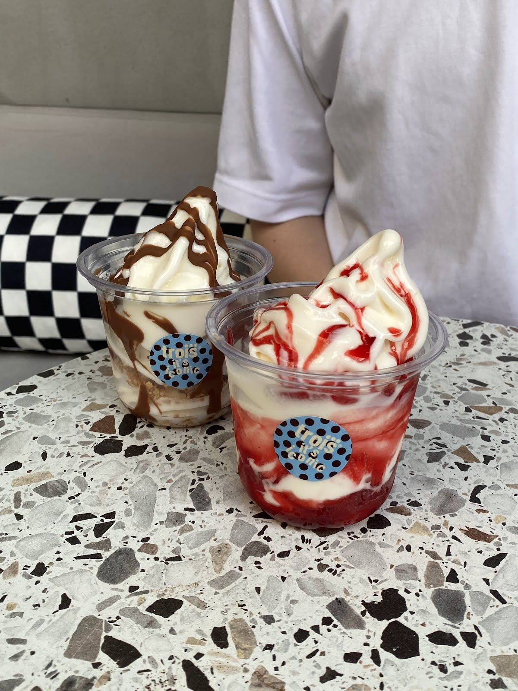
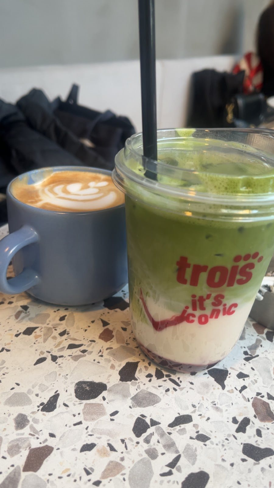

Google yorumu ★★★★★
“Kahveleri ve tatlıları cidden kaliteli Lotuslu dondurması favorim güzel bir ortam var eş dostla gelinebilecek bir yer”Samet S.Yorumun tamamı
Barış Mahallesi, Beylikdüzü
Kahvenin yanına bir tatlı,
sohbetin yanına biraz daha zaman.


Aynı masa, farklı fincanlar.
Seçimler farklı olabilir. Bir fincan kahveyle ya da buzlu matchayla, Trois Coffee’de aynı masada buluşalım.
Günün ilk molasına ya da uzun bir sohbete.
Fincanın yanına bir tatlı ya da dondurma.
Bir köşede Trois.
İçeride bir köşe, dışarıda bir masa. Arkadaşınızla buluşun, günün temposuna birlikte ara verin.
Google yorumları
Google yorumu ★★★★★
“Kahveleri ve tatlıları cidden kaliteli Lotuslu dondurması favorim güzel bir ortam var eş dostla gelinebilecek bir yer”Samet S.Yorumun tamamı
Google yorumu ★★★★★
“Gerçekten çok elit ve modern bir mekan. Atmosferi, dekorasyonu ve enerjisi harika.”Berk E. D.Yorumun tamamı
Google yorumu ★★★★★
“Ortam harika hizmet harika bayıldık Beylikdüzündeki gittiğim en konforlu mekan diyebilirim mutlaka tekrar geleceğim”Furkan S.Yorumun tamamı
Google yorumlarından kısa alıntılar. Puan ve yorum sayısı 2 Kasım 2026 tarihinde kontrol edilmiştir.
Güncel çalışma saatleri, menü ve konum bilgisi için telefonla veya Instagram’dan bize ulaşabilirsiniz.